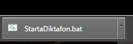
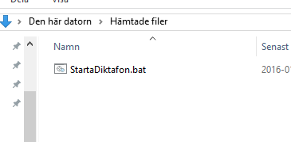
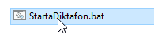
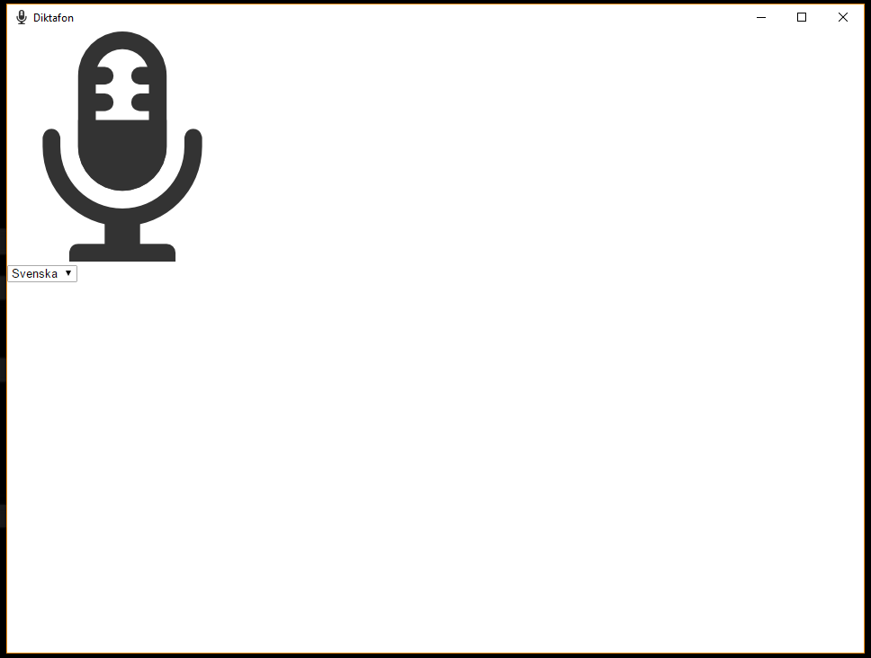
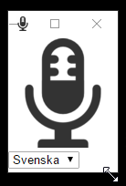

1.1 Genvägarna fungerar enbart i windows. Använder du MAC hänvisas du till vanliga länken, för att öppna i önskad webbläsare
1.2 Google Chrome måste vara installerad på datorn

|

|
2.1 Klicka på "Ladda ner genväg"
2.2 Nedladdningen startar
3.1 Eventuellt kan du redan välja vid nedladdning, var den ska vara på din hårddisk, om inte läggs den i nedladdat mappen
3.2 Flytta genvägen till önskad plats, där du vet att den finns
4.1 Dubbelklicka på filen du laddat ner
4.2 Fönster öppnas
Förstagången ett program startas i en dator, kan storleken behöva justeras. Detta kan även vara senare om man av någon anledning vill justera storleken.
5.1 Lägg muspekaren i ett hörn av fönstret så en "sned" "dubbel pil" visas (Se bild)
5.2 Håll ner vänster musknapp, dra sedan med musen till önskad storlek
